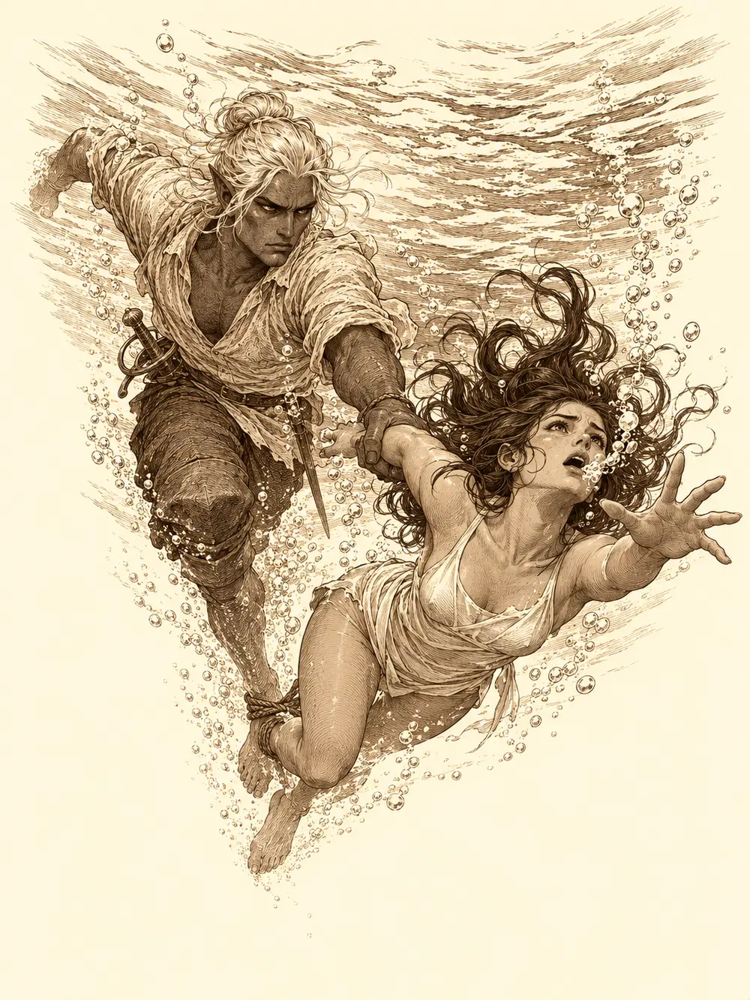

Capítulo 97
Una cálida tarde de verano
Libro VI · La Puerta Negra
Desde el baile, Calista apenas levantaba la cabeza de los papeles. Había visitado a varios nobles, firmado contratos, revuelto los archivos de los cazadores y buscado ratos para ir a ver a Shizuka, que pasaba demasiado tiempo sola. Katari también iba a menudo a jugar con la niña, vigilaba cómo se recuperaba Erk y atendía sus asuntos con los sueños. Aka seguía al frente de sus tropas y tenía pendiente una reunión de estrategia con un noble. Gelbreak, por su parte, seguía de mal humor por haber tenido que ir a la fiesta, y no se molestaba en disimularlo.
Aquella mañana, en la base de Sho, se oyó fuera un estrépito de martillos, taladros y cacharros cayendo, y por algún motivo un maullido. La puerta estaba atrancada con un tablón. Cuando alguien lo apartó y asomó la cabeza, encontró a Blaze con una llave enorme en la mano, grasa hasta los codos y cara de orgullo.
"Creo que es mi mejor trabajo hasta la fecha. Venid, venid, tengo algo que enseñaros".
Mientras la seguían, Calista preguntó por qué todos la miraban con tanta desconfianza, si parecía una niña normal. Aka le contó que la primera vez que la vio, engañada por los enmascarados, estaba prendiéndole fuego a un pueblo entero, y que estuvo a punto de acabar con ella. A la tritón le pareció una barbaridad lo de acabar con una niña. Gelbreak pasó por su lado y apuntó que también se podía hablar con ella, como había hecho él.
Blaze había arreglado el portal. Ya no mareaba al cruzarlo, aseguró, y además había desbloqueado un destino nuevo que todavía no tenía nombre. Movió una especie de dial, dijo que los esperaba al otro lado y desapareció.
"Bueno", dijo Gelbreak. "Una niña menos".
No pensaba seguirla. Katari hizo aparecer un oso que lo agarró de la ropa sin demasiada delicadeza. El drow se iluminó el dedo de morado y el oso se deshizo en lucecitas. Luego, a pesar de todo, cruzó.
Al otro lado hacía sol. Un calor agradable entraba por las ventanas de una cabaña de madera y se oía el mar. Una mujer con cuernos se lanzó a abrazar a Blaze como si llevara años sin verla. Se llamaba Min y era su amiga.
"Es un lugar entre planos", explicó. "Está al borde de todos los planos elementales. Aunque parezca raro, es un paraíso".
Por la ventana se veía una playa y un mar que llegaba hasta el horizonte, tan quieto que a Calista se le erizaron las aletas. Aquella agua no se movía como se mueve el agua. Min le aconsejó que no nadara muy lejos, o se caería. Era como estar dentro de un cubo; más allá del borde no había nada.
Varios quisieron volver de inmediato. El portal no se abriría hasta la noche. Gelbreak se llevó la mano al estoque y miró a Aka: aquella mujer tenía la llave para salir y no pensaba dejarlos ir, podían hacerlo rápido. Aka le preguntó qué pensaba hacer con eso. Ella tampoco quería estar allí, pero no iba a permitir que hiriera a nadie. Min, sin inmutarse, le ofreció al drow unas gafas oscuras para el sol. Cuando él preguntó para qué servían, ella empezó a guardárselas.
"Si no las quiere él, las quiero yo", dijo Calista.
Mientras esperaban, habría juegos con premio. Pero para salir a la playa había que ponerse bañador. Calista eligió uno blanco, un sombrero de ala ancha y unas sandalias, y salió perfecta. Gelbreak se asomó del vestidor al cabo de un momento.
"Solo hay un traje de hombre".
Era un bañador estampado de patos pequeños y amarillos. Se cruzó de brazos y anunció que no pensaba ponérselo. Calista se le acercó, le apoyó una mano en el hombro y le habló con una dulzura que llevaba magia dentro: estaban en la playa, había que mezclarse con el entorno, no sería para tanto. El drow entró a cambiarse a regañadientes. Cuando salió, la tritón intentó taparse la boca, pero la risa le rompió la concentración y el encantamiento se le cayó de las manos. Terminó doblada sobre la mesa, sin aire. Gelbreak pasó junto a ella soltando en la lengua de los drow todos los insultos que conocía y empezó un conjuro. Min, que entendía esa lengua, le tiró una piña a la cabeza y la magia se deshizo antes de nacer.
"Aquí no se hacen esas cosas".
En la orilla, Katari se había sentado con los pies en el agua y Aka detrás de ella. Gelbreak escupió en la arena y se fue a la sombra.
Al rato el portal volvió a encenderse y por él aparecieron Jin y Shizuka. Habían intentado ir de Ukio a Sho y el portal modificado los había dejado allí. La niña no podía salir de la cabaña sin bañador y empezó a quitarse la ropa en mitad de la sala, hasta que Jin la llevó al vestidor. Luego cruzó la playa como una exhalación, llenó de arena la toalla de Calista y la tritón, en lugar de enfadarse, la levantó en el aire.
Min reunió a todos. Las parejas quedaron así: ella con Blaze, Aka con Katari, Jin con Shizuka. Quedaban el drow y la tritón.
"Me niego", dijo Calista. "Con él otra vez no. Ya tuve suficiente con el baile".
Min le prometió lo que pidiera por esa boca si ganaba. La tritón arqueó una ceja. Gelbreak seguía de brazos cruzados con sus patos amarillos. Al final los dos aceptaron por el premio.
La primera prueba consistía en romper una sandía con los ojos vendados, guiado por la pareja. Jin y Shizuka lo intentaron y no lo consiguieron. Aka se puso la venda y Katari la guio con mucho cariño y poco sentido de la orientación: derecha, no, la otra derecha, hacia atrás, no tanto. Aka, que confundía los lados, dio vueltas en círculo, volvió al punto de partida y terminó concentrándose en los demás sentidos hasta reventar la fruta.
Le tocó a Gelbreak. Calista lo guiaba con voz encantadora.

"Muy bien, querido. Dos pasos adelante. Confía en mí".
Lo llevó de cabeza contra unas cajas de madera. El drow se cayó, se levantó, recordó cómo era la zona antes de que le taparan los ojos, ignoró a su pareja y partió la sandía de un puñetazo. Se quitó la venda.
"¿Ves como mis indicaciones eran buenas?", dijo ella.
"Las últimas no, porque no te he hecho caso".
Hubo que desempatar con los papeles cambiados. Calista se negó a ponerse la venda y él se la colocó a la fuerza. Luego se acercó a su oreja y le habló con aquella voz que la tritón ya había oído una vez, en el baile, sin saber de dónde venía. Le dijo que si no iba recta esa tarde se haría una merluza con ajo, y el miedo le entró a ella por la nuca. Calista echó a correr hacia delante para alejarse de él, tanteando el aire con las manos, pálida, temblando, hasta que tocó algo redondo, lo golpeó y rompió la sandía. No se quitó la venda para mirar atrás. Fue a refugiarse junto a Aka y le pidió cambiar de pareja o retirarse. Min no cambió las parejas, pero una piña cayó del cielo sobre la cabeza de Gelbreak y el miedo de Calista se deshizo con el golpe.
"No hagas eso", le dijo Min. "Y mucho menos a tu compañera".
Calista se secó las lágrimas, desconcertada. ¿Por qué le había tenido tanto miedo a un idiota? Min dio un punto a cada una de las dos parejas que habían roto su sandía.
La segunda prueba era una carrera a nado con las parejas atadas por los pies. Calista sonrió por primera vez en toda la tarde. Aquella era su prueba. Min la señaló con su varita y las aletas y membranas de la tritón se replegaron contra la piel.
"Para que todos compitamos en igualdad de condiciones".
Con ellas se fue la facilidad de su cuerpo para moverse en el agua. Calista se quedó en la orilla sintiendo que le faltaba algo, como a quien le arrancan las manos. Cuando se metió en el mar, no supo nadar. Su cuerpo no respondía como siempre, tragaba agua y se hundía, y Gelbreak tuvo que arrastrarla en varios tramos.
"Vaya. Pensaba que este era tu territorio".
"Me han quitado mis aletas. ¿Cómo quieres que sea mi territorio?".
A partir de ahí la carrera se convirtió en una guerra de trampas. Calista quiso mover las corrientes a su favor y Min deshizo el conjuro. El drow se trasladó de un salto con su compañera atada a los pies, cayó en una trampa y los dos volvieron a la salida. La tritón los hizo caminar sobre el agua y Min se lo quitó, porque eso ya no era nadar. Calista lanzó su serpiente del collar para asustar a los que iban delante; luego se encogió para pesar menos; luego, desesperada, hizo crecer a Gelbreak hasta volverlo gigante, a ver si avanzaban más. No sirvió de nada. Por el camino había cajas con premios que ayudaron a otros equipos. Aka y Katari nadaron sin trucos y llegaron primero.
El drow, todavía gigante, agarró a su pareja y la soltó en el agua.
"Deja de hacer tonterías".
"¡Tonterías! He intentado más cosas que tú. Me han quitado mis aletas. Es como si a ti te quitaran las manos".
Al salir del mar, Calista recuperó sus aletas y sus membranas. Eso no le devolvió el humor.
Al caer la tarde hubo carne asada, patatas y zumo, que Shizuka intentó hacer pasar por alcohol sin éxito. Aka y Katari compartían un plato de marisco. Jin vigilaba a la niña. Calista bebía sake mirando el horizonte, sin comer, y cuando Min se le acercó para animarla le dedicó una mirada de odio que nadie le había visto nunca, ni siquiera con Gelbreak. El drow estaba sentado en la arena, dejando escurrir puñados entre los dedos y murmurando en su lengua.
Min recordó que las ganadoras tenían derecho a un premio. Aka miró a Katari y luego a Min.
"Quiero un adorno espiritual, algo que le recuerde de dónde viene".
Era un colgante. Aka se colocó detrás de Katari, se lo puso al cuello, le susurró unas palabras que solo ella oyó y le dio un beso en la mejilla. Alguien habló de boda. Min sacó una bolsa con cincuenta monedas de platino, el valor de quinientas de oro, y dijo que era para pagarla, que era costumbre dar una dote, y que exigía estar invitada. Shizuka llegó corriendo.
"¿Os vais a casar?".
Katari, que tenía un trozo de pollo a medio comer, abrió mucho los ojos, se convirtió en un pajarito y salió volando. Aka se quedó sola con la pregunta.
"Espero que algún día sí".
"Yo quiero ir".
"Si nos casamos, te invito".
Calista miró a Gelbreak, que fulminaba con los ojos a la pareja feliz.
"¿Te gustaría dejar de verlos?".
Una niebla espesa cubrió a las vencedoras, y él añadió una oscuridad que no dejaba pasar la luz. Los dos salieron corriendo hacia la cabaña y, por un momento, se rieron juntos. Él se dio cuenta enseguida y se apartó.
Ya era de noche. Min preguntó si lo habían pasado bien. Calista la ignoró y siguió andando. Aka se volvió hacia la anfitriona: ella tenía obligaciones, era comandante, y la habían sacado de su puesto sin avisar. Min aseguró que había hablado con sus superiores y se lo repitió hasta tres veces, cada vez con más convicción. Aka la miró como quien no termina de creérselo.
"La próxima vez, avísame antes".
El portal se abrió y volvieron todos a Sho. Min les dijo que podían regresar cuando quisieran. Calista se sentó de nuevo ante sus documentos y suspiró.
"Ha sido una pérdida de tiempo".
"Y que lo digas", contestó Gelbreak de camino a su habitación. "Incluso la compañía".
Ella no levantó la vista de los papeles. Desde el pasillo se oyó todavía al drow maldecir un buen rato en su lengua, hasta que una puerta se cerró.